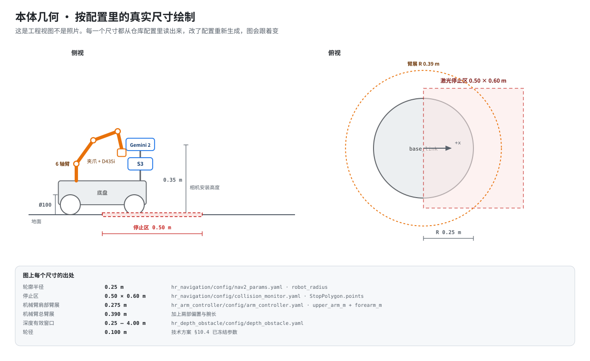

系统架构
五层，按「职责能不能被抢走」划分
上位机可以崩、可以卡、可以被 Wi-Fi 断开，但都不能影响 SBUS 人工接管和硬件急停。 底盘的限速、限流和 H 桥输出只由 STM32 决定，ROS 侧任何节点都改不了。

上位机负责「想去哪」，下位机负责「现在准不准动」。

这是按仓库配置里的真实尺寸画的工程视图。轮廓半径、停止区、臂展、深度有效窗口 都从对应的 yaml 读出来，改了配置重新生成，图会跟着变。
| 类别 | 选型 | 职责 |
|---|---|---|
| 上位机 | 野火鲁班猫 5（RK3588，8 GB + 64 GB） | 视觉、SLAM、导航、任务编排 |
| 深度相机 | Orbbec Gemini 2 | RGB + 深度 + 点云；三维测距、高低障碍、AprilTag |
| 激光雷达 | RPLIDAR S3 | SLAM、定位、二维避障、停止区主观测 |
| 下位机 | STM32F407VET6 + FreeRTOS | 实时控制、编码器、状态估计、安全监控 |
| 执行器 | 4× MC520P30_12V 有刷减速编码器电机 | 30:1、1560 count/rev（四倍频） |
| 功率级 | 4× VNH5019A-E 独立全桥 | 20 kHz PWM、过流/过温硬件保护 |
| 人工接管 | HT-10A + SBUS 接收机 | 不经过上位机的接管与急停 |
| 机械臂 | 6 轴舵机臂 + 夹爪 + 末端 D435i | 固定工作位的近距离抓取，臂展 0.39 m |